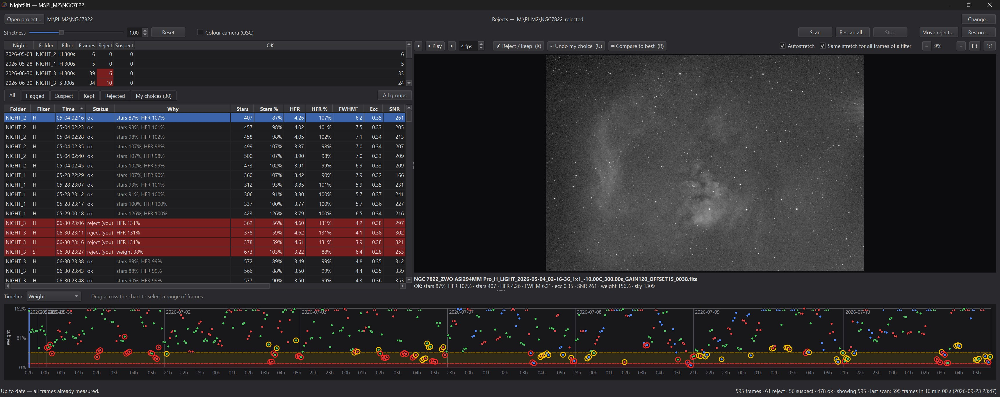

NightSift
Sorting out the bad subs from a night of imaging, without blinking through all of them by hand.
After a few clear nights I usually end up with several hundred light frames. Some are fine, and some have trailed stars from a guiding hiccup, clouds drifting through, focus that drifted off, or a filter that was never quite in focus to begin with. I used to find those by blinking every frame in a FITS viewer, which took longer than I'd like to admit.
NightSift is what I wrote to make that faster. It measures every frame, flags the ones that look wrong compared with the rest of that night, and then lets me blink through just the questionable ones and make the final call.

What it does
- Measures every sub. Star count, HFR, FWHM, eccentricity, background and SNR, all computed in the background while you do something else.
- Compares like with like. Frames are only judged against others from the same night, filter and exposure, so a hazy night doesn't make a good one look bad.
- Flags in two levels. Reject for the obvious ones (very low weight, bloated or doughnut stars, trailing) and suspect for the borderline ones. A strictness slider moves the line.
- Fast blink viewer. Step through the flagged frames with the arrow keys, zoom to 1:1, and press X to reject or keep. Every choice can be undone.
- Compare to the best frame. Press R to flip between a frame and the best one of its group. It lines them up, even across a meridian flip, so the difference is easy to see.
- Timeline. A chart of weight, HFR, FWHM and so on over each night. You can see clouds coming in or focus drifting at a glance, and drag across a stretch of bad frames to reject them together.
- Never deletes anything. Rejected frames are moved to a folder next to the project, so you can point WBPP (or anything else) at the project folder and it only sees the good ones.
- Restore. Changed your mind? Restore… moves every rejected frame back to where it came from, so nothing you do is permanent.
There are other tools
This problem is not new, and there are good tools for it already: PixInsight's SubframeSelector and Blink, ASTAP, Siril, tenmon and more. I've used several of them. NightSift is simply my attempt at a workflow that fits the way I work: scan the whole project folder, look only at what needs looking at, and move the rejects out of the way before stacking. If another tool already works for you, there's no need to switch.
Getting it
The current version is NightSift 1.0.0. Download the source zip from that page, or clone it with git.
NightSift is a Python program. With Python 3.10 or newer installed:
git clone https://github.com/seemantadutta/nightsift cd nightsift pip install -e . python -m nightsift.app
Quick start
- Run
python -m nightsift.appand click Open project…, then pick the folder you'd give to WBPP, the one with all your nights in it. - Click Scan. The first scan measures every light frame. It runs in the background and can take a while on a big project. Darks, flats and bias frames are skipped.
- Go to the Flagged tab. Step through with the arrow keys, press R to compare a frame with the best one of its group, and press X to reject or keep it. Press U to undo.
- Click Move rejects…, which shows exactly what will move and where before it touches anything. By default rejects go to
<project>_rejected, next to the project folder. - Stack the project folder as usual. If you want any frames back later, Restore… puts them back.
If NightSift flags too much or too little, move the Strictness slider. 1.0 is the default, and higher values flag more.
There's also a command-line version (nightsift scan, nightsift blink).
The README on GitHub has the details.
I use it on Windows. It should run on macOS and Linux as well, but I haven't tried.
It's a personal project, so expect rough edges. Bug reports and suggestions are welcome on GitHub.